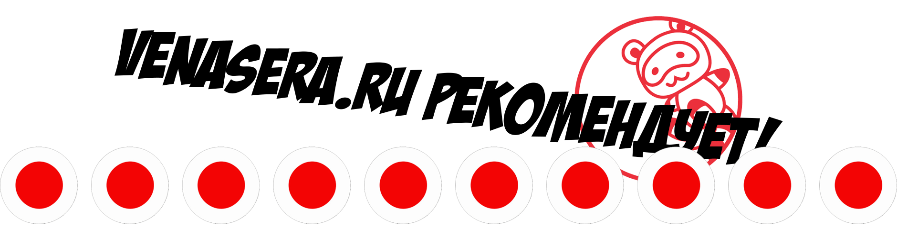

Бэппу: 9 адских горячих источников!
Когда был проездом в г. Фукуока, решил доехать до г. Бэппу (別府), что в префектуре Ойта (大分県).
Как добраться до Бэппу?
Если Вы в Токио, то самый быстрый вариант – самолет, который летит до аэропорта Ойта (大分空港). Я же, был в г. Фукуока (福岡) и поэтому воспользовался локальными поездами.
Есть множество разных способов добраться, но самый оптимальный – поезд Соник (синенький такой), направляющийся до ст. Ойта (大分).

От станции Хаката (Фукуока) он доезжает до станции Когура (小倉), и далее, без пересадок, Вы переворачиваете сиденья в другую сторону и поезд поедет далее уже до станции Бэппу (別府).

Стоимость в одну сторону будет примерно 4 000¥.
А далее едем до 9 прудов ада Бэппу
Доехав до станции Бэппу, нужно пересесть в одновагонный поезд и проехать две станции назад, до ст. Камэда (亀田).

А уже оттуда ехать на автобусе до первого места назначения – Адского Кровавого Пруда (血の池地獄), но об этом чуть позже.

Когда был выпуск про г. Кагава, я говорил о том, что жители префектуры Кагава именуют свою префектуру префектурой Удона – Удон-Кэн (うどん県), то жители префектуры Оита именуют свою префектуру префектурой горячих источников – Онсэн-Кэн (おんせん県). Собственно, из названия становится ясно, что в префектуре Оита находится больше всего горячих источников по всей Японии. По статистике здесь находится 4 471 онсэн.

Для того, чтобы понять, насколько много это или мало для Японии, мы возьмем вторую по количеству горячих источников префектуру Кагосима. В префектуре Кагосима находится всего лишь 2 785 онсэн. И именно Бэппу является самым главным местом для посещения горячих источников, т.к. здесь сконцентрировано огромное количество Онсэн. Их тут около 2300 штук.

Самая знаменитая область Бэппу – это девять горячих источников, каждый из которых имеет свою неповторимую особенность. Почти вся вода в Бэппу по качеству сравнима с артезианской водой.
Карта: 9 адских горячих источников Бэппу
Я составил подробную интерактивную карту по прудам Бэппу (на русском языке), а ниже о каждом месте я опишу подробнее.
Что такое Дзигоку Мэгури 地獄めぐり?
Дзигоку Мэгури (地獄めぐり) – это небольшой маршрут со всеми главными необычными горячими источниками Бэппу, которые зовутся "Адами".
Слово Дзигоку (地獄), которое ставится в конце слова данных прудов переводится как "Ад", ведь, в отличие от обычных онсэнов, т.е. горячих источников, в них невозможно купаться, Вы скорее сваритесь там заживо + вода бурлит, пузырится и создает пар. Отсюда и такое название.
Мне кажется, что в давние времена народ опасался таких мест из-за того, что в те времена просто не было науки, объясняющей такие аномалии. Сравните с картиной, где наказывают грешников? А теперь посмотрите на кровавый пруд в Бэппу.
Стоимость 7 прудов составляет 2 000¥, лучше сразу брать ваучер на все 7 прудов, выйдет дешевле. На остальные ады пруды ваучер не распространяется, поэтому придется докупать билеты отдельно, либо просто пропустить.
Ну а я расскажу обо всех местах более подробно и начну с кровавого адского пруда Бэппу!
Кровавый пруд Ада в Бэппу
Среди 9 горячих источников самый известный – Кровавый пруд Ада (血の池地獄 Ти Но Икэ Дзигоку).

Огромное количество железосодержащих минералов на дне пруда придает ему ярко-красный цвет – отсюда и такое название.


Глубина кровавого адского пруда составляет более 30 метров, а температура достигает 78 градусов по Цельсию и в ней запросто можно заживо свариться, поэтому везде стоят ограждения и таблички с предупреждениями.

Этот пруд – один из самых старых и существует уже более 1 300 лет. Тысячи лет назад местные жители его избегали, боясь его "адских" свойств, называя "преисподней", ведь пруд очень горячий и испускает огромное количество пара + страшный "кровавый" цвет!

Но после, благодаря этому пруду, люди начали создавать различные лекарственные препараты для кожи, а также, научились красить дома с помощью его красной глины. Поскольку такое уникальное явление почти нигде в мире не встречается, пруд был признан правительством Японии как одно из важнейших мест.
Кстати, у каждого Дзигоку есть своя сувенирная лавка с уникальными, для того или иного пруда, товарами. Здесь, например, можно наблюдать такую голову чертика.

Далее, я пешком дошел до соседнего горячего источника – Тацумаки Дзигоку.
Адский Торнадо (Тацумаки Дзигоку)
Это место не зря названо Адским торнадо (龍巻地獄), т.е. Тацумаки Дзигоку. Это один из самых крупных гейзеров в Японии. Каждые 30 минут он бьет 105 градусным кипятком на 40, а то и на 50 метров. А вода под землей еще более горячая – около +150С.
Недалеко от гейзера есть сувенирная лавка с гейзерными напитками, мороженными и т.д.
А далее я пошел на автобус, т.к. до следующего участка пешком не дойти... .
Пока ехал на автобусе, постоянно закладывало уши, т.к. там очень гористая местность и сильные перепады давления, на заметку тем, у кого с этим могут возникнуть проблемы.
Белый адский пруд (Сираикэ Дзигоку)
Вода в нем больше похожа на кипящее молоко из-за содержания в нем большого количества кальция. Температура примерно +95С.

Белый пруд окружен красивым садом, который Вы можете обойти по кругу.

После, я отправился до следующего места!
Ад Дьявольского Монстра (Онияма Дзигоку)

Ад Дьявольского Монстра (鬼山地獄) так же носит и другое название – крокодилий Ад (ワニ地獄), т.к. буквально рядышком тут обитает куча крокодилов различных размеров и видов.

Температура самого пруда составляет около +99С, что абсолютно не смущает сотню крокодилов, которая находится по соседству от него. Естественно, они купаются не в 99 градусном пруде, но вода по соседству, говорят тоже достаточно горячая.

Крокодилов тут начали разводить с 1912 года, а чучело самого первого крокодила по имени "Итиро" Вы можете найти в павильоне по соседству. Он прожил там дольше всего, аж 71 год, и был самым крупным крокодилом на ферме.

Я даже застал их кормежку! Это одновременно и жутко и захватывающе. Но учтите, что кормежку Вы сможете увидеть только по выходным.

А также, в павильоне есть аквариумы с малышами крокодилов, которые уж очень напоминают своих предков – динозавров, только в миниатюре.

Адский Котел (Камадо Дзигоку)
На мой взгляд, одно из самых красивых и недооцененных мест в Бэппу – это Адский Котел (竈地獄).

Это группа нескольких горячих источников с кипящей голубой водой. Вода тут также, достигает +90С. В жизни не видел воды синее, чем эта.

Такое чувство, будто ее покрасили краской, вот настолько неестественно, но выглядит очень красиво и эффектно.


Также, примечательно то, что тут есть статуя "черта-повара", т.к. здесь можно попробовать блюда, приготовленные на пару от данного источника.
Также, тут есть очень похожий на кровавый красный пруд, только чуть меньше и менее эффектный. Вода тут достигает +95С.

А после я направился к пруду... "Голова Монаха" О_О
Пруд Голова Монаха
Пруд Голова Монаха (Бо:дзу Дзигоку) или как сейчас называется Онииси Бо:дзу Дзигоку – грязевой ад.

Такое название происходит из-за сероватой бурлящей глины и пузырьков воздуха, которые образуются на поверхности. Температура данной глины составляет +99С.


Морской ад (Уми Дзигоку)
Морской ад (海地獄) был последней точкой моего маршрута – самый дальний пруд. Это один из самых красивых 9 прудов ада, однако, мне понравился больше пруд "адский котел" (камадо дзигоку 竈地獄).

Вода в нем имеет яркий кобальтово-лазурный оттенок, в результате извержения вулкана Цуруми 300 лет назад. Вода сравнима с морской, но только лишь по цвету, поэтому данный пруд и назвали 海地獄 (Уми Дзигоку) – "Морской Ад".

На месте источника образовано небольшое озеро глубиной 120 метров с температурой воды 90-98ºС.

Эту воду охлаждают и используют для Аси-ю (足湯) – это когда в воду из горячего источника опускают только ноги. Также, Аси-ю могут посещать и люди с ограниченными возможностями, так как здесь есть все необходимое оборудование.

Около 360 тыс. литров горячей воды, в которой содержится приблизительно 1,26 тонны солей выкачивается из пруда. Ежедневно по деревянным трубам вода направляется в гостиницы и дома, где ее используют для горячих ванн.

На входе растут лилии и другие экзотические растения. Воды из источника подходят к пруду через трубы, благодаря чему в нем поддерживается постоянная температура, подходящая для роста тропических растений.
Также, там можно купить бомбочки для ванны, чтобы в Вашей ванне была вода такого же цвета, что и в Уми Дзигоку.

А около теплицы, недалеко от Морского Ада (Уми Дзигоку), можно встретить мини кровавый пруд. :)


Вот мы и прошли 7 прудов Ада, осталось еще 2, но эти самые 2 оставшихся пруда стоят отдельных денег и, на мой взгляд, их стоит посещать в последнюю очередь, если Вы посмотрели такие пруды как кровавый адский пруд, адский котел и т.д.
Вот и все, все обязательные Дзигоку мы прошли (то, что входит в ваучер). Теперь про то, куда можно сходить, но только опционально, если этого мало (хотя Вы и так будете с открытия до закрытия весь ведь бродить).
Адская гора (Яма Дзигоку)
Адская гора (山地獄) – это грязевые вулканы, из недр которых вырывается серая грязь, а после – застывает. Также, там есть мини-зоопарк с крупными животными (бегемоты и т.д.), но адская гора, не входит в стоимость билета, который покрывает все входные билеты в дзигоку мэгури, поэтому Вам придется платить за вход отдельно.
НО... не советую тратиться еще и на вход сюда, если нет лишних денег, т.к. там нет ничего особенного.
Золотой Дракон (Кинрю Дзигоку)
Все просто. Установленная здесь статуя дракона испускает три водные струи в утренние часы, а так просто выпускает горячие подземные пары. Опять же, вход за отдельную плату.
Также, в Бэппу, как и во всей Японии, люди подошли к делу с юмором и Вы часто можете увидеть таблички с надписями: "Осторожно! Если Вы свалитесь в пруд, то сваритесь!" Не знаю, может тут и не было ничего смешного, но для меня такое предупреждение очевидно, раз так валит пар. Но так написано по-английски, по-японски просто написано о запрете вхождения за ограничители.
Горячие источники также используют для приготовления пищи. При помощи пара от горячих источников с высокими температурами варят яйца и готовят пудинги, которые пользуются большой популярностью.
Оценка Бэппу и адских горячих источников "Дзигоку Мэгури"
Это одно из лучших мест в Японии и я, однозначно, советую посетить данное место, т.к. оно уникально, нигде в мире Вы такого не увидите.
Единственный минус Бэппу и то, природный, – постоянные резкие перепады высот из-за чего немного побаливает голова и закладывает уши.
